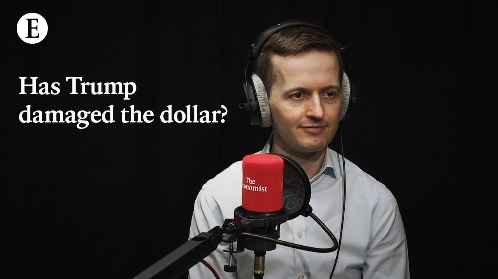

【经济学人：特朗普损害了美元的地位吗？】
Summary: The paragraph discusses concerns about the dollar's reserve currency status due to financial market reactions, trade wars, fiscal policies, and political uncertainty, potentially leading to a less stable global financial system.
摘要： 这段文字讨论了由于金融市场反应、贸易战、财政政策和政治不确定性对美元作为储备货币地位的担忧，可能导致全球金融体系更加不稳定。

⏱️ Estimated Reading Time: 22 min
📚 四级生词 📚 六级生词 📚 雅思生词 📚 托福生词 📚 专八生词 📚 SAT生词 📚 考研生词 📚 GRE生词 📚 高考生词 📚 其它生词生词
The thing about reserve currencies is part of what makes them safe is that everyone else thinks they're safe.
储备货币之所以安全，部分原因在于所有人都认为它们是安全的。
You have, I think, a financial crisis in transition and then you end up in a not not a world where you can't park your assets anywhere, but a less secure and stable one.
我认为，这是一场正在转变的金融危机，最终你会进入一个并非无处存放资产的世界，而是一个不那么安全和稳定的世界。
Henry, for all of the upheaval of the past couple of weeks, the on again, off again tariffs and so on.
亨利，尽管过去几周发生了动荡，关税政策时断时续等等。
That's not the only thing that's troubled you in in this time.
这并不是这段时间唯一困扰你的事情。
No, the tariffs aren't the only thing.
不，关税并不是唯一的问题。
It's also the financial market reaction which seems to be beyond a stock market sell-off.
还有金融市场的反应，这似乎不仅仅是股市抛售。
It looks like a generalized turn away from American assets by investors which could perhaps if it continues and gets worse result in a threat to the dollar's status as the world's reserve currency which is the status on which the global financial system is built and on which uh a lot of the global economy relies.
看起来投资者普遍在远离美国资产，如果这种情况持续并恶化，可能会威胁到美元作为世界储备货币的地位，而全球金融体系正是建立在这一地位之上，全球经济也依赖于此。
What's happening now that's giving you that fear?
现在发生了什么让你感到这种恐惧？
Since President Trump announced the uh so-called reciprocal tariffs at the start of April, there have been big falls in equity markets.
自从特朗普总统在四月初宣布所谓的对等关税以来，股市大幅下跌。
Everyone knows about that.
大家都知道这一点。
The more alarming signal that's happened is this simultaneous selloff in bonds and in the dollar.
更令人担忧的信号是债券和美元同时遭到抛售。
So, normally what happens when bond yields go up is that the dollar goes up too because investors can get more by buying the dollar and holding those bonds.
通常，当债券收益率上升时，美元也会上涨，因为投资者可以通过购买美元并持有这些债券获得更多收益。
When your bond yields go up but the dollar goes down, it means that there's this generalized selloff, a flight from those assets which suggests investors are somewhat fearful.
当债券收益率上升但美元下跌时，这意味着出现了普遍的抛售，投资者逃离这些资产，表明他们有些恐惧。
It's the kind of dynamic you see more in emerging markets.
这是你在新兴市场更常见的情况。
It's the kind of dynamic you saw in Britain after the disastrous mini budget under Liz Truss's premiership.
这是你在利兹·特拉斯首相任期内灾难性的迷你预算后在英国看到的情况。
And that's what's sending this signal that maybe there's this risk premium now uh on US assets.
这就是现在发出的信号，可能美国资产现在存在风险溢价。
Uh and and it's that that's worrying.
而这正是令人担忧的地方。
And what's also going on at the same time as the trade war is that Congress is preparing to loosen the purse strings as it renews the Trump tax cuts from the first term and potentially tries to add to them.
与此同时，贸易战期间，国会正准备放松财政支出，因为它延续了特朗普第一任期的减税政策，并可能试图进一步扩大。
And it's passed this budget framework which is very aggressive in terms of the fiscal loosening that could go on.
它还通过了这一预算框架，在财政宽松方面非常激进，可能会持续下去。
you know, potentially more than the Trump tax cuts, the COVID stimulus and uh Biden stimulus combined according to the committee for a responsible federal budget.
根据负责任联邦预算委员会的说法，这可能比特朗普减税、新冠疫情刺激和拜登刺激计划的总和还要多。
So this big fiscal loosening is also enough to catch the attention of bond markets and dollar investors I think.
因此，我认为这种大规模的财政宽松也足以引起债券市场和美元投资者的注意。
But but surely the these early signs are evident to also the Trump administration to economic advisers in the administration, right?
但这些早期迹象对特朗普政府的经济顾问来说也是显而易见的，对吧？
So clearly the administration will be watching the financial markets and they have proved responsive already this month uh turning around on some of the uh tariffs in response to what's going on.
显然，政府将密切关注金融市场，并且本月已经证明他们对此做出了反应，调整了一些关税以应对当前情况。
But what's pretty remarkable is that you have senior figures in the administration who aren't that keen on the dollar's reserve currency status.
但值得注意的是，政府中有一些高层人物对美元的储备货币地位并不那么热衷。
uh they've made uh Steven Moran who is the uh chairman of the council of economic advisers has made this argument that the strong dollar is a tax on manufacturing workers because it makes us exports more expensive.
经济顾问委员会主席史蒂文·莫兰曾提出这样的论点，即强势美元是对制造业工人的税收，因为它使美国出口更昂贵。
Uh JD Vance has said that in the past as well.
JD·万斯过去也说过类似的话。
So there is this idea out there in MAGA circles that the reserve currency status is something that brings big costs.
因此，在MAGA圈子里有一种观点认为，储备货币地位会带来巨大的成本。
There were a lot of rumors flying in financial markets earlier uh this year about this so-called Mara Lago called which was based on something that Steve Moran had written before he joined the administration that's been left to the side now but he did give this updated analysis in a speech recently which entertained ideas such as asking foreigners to pay checks to the US government in order to pay for the services the US was providing to the world which includes includes the provision of the reserve currency and saying these kind of things in public is a pretty uh bold thing to do uh because for decades the US government has been careful to say that it welcomes a strong dollar that it is a safe harbor for international investors but now the administration itself has actually cast a bit of doubt on that and seems to be fairly untroubled by the the kurfuffle that that has raised but like let's game this out suppose the incipient signs that we see now pick up and this goes in the nightmare scenario.
今年早些时候，金融市场流传着很多关于所谓的“马阿拉歌计划”的谣言，这是基于史蒂夫·莫兰在加入政府之前写的东西，现在已经被搁置一旁，但他最近在一次演讲中给出了更新的分析，提出了一些想法，比如要求外国人向美国政府支付费用，以支付美国为世界提供的服务，其中包括提供储备货币，公开说这些话是相当大胆的，因为几十年来美国政府一直谨慎地表示欢迎强势美元，认为它是国际投资者的避风港，但现在政府本身实际上对此提出了一些质疑，并且似乎对由此引发的骚动并不太在意，但让我们推演一下，假设我们现在看到的初期迹象加剧，并走向噩梦般的情景。
What happens?
会发生什么？
How does it play out?
会如何发展？
So I think the first thing that happens is that bond yields continue to rise as foreigners who own US treasuries.
我认为首先会发生的是，随着持有美国国债的外国人抛售，债券收益率继续上升。
So foreigners own I think $ 8.5 trillion of US treasuries, most of whom by the way are private sector investors um with whom the Trump administration couldn't negotiate in a diplomatic fashion.
外国人持有大约8.5万亿美元的美国国债，其中大部分是私营部门的投资者，特朗普政府无法以外交方式与他们谈判。
If those investors start offloading bonds, bond yields go up.
如果这些投资者开始抛售债券，债券收益率就会上升。
Now that very quickly feeds back into America's budget because America has a lot of debt.
这会迅速反馈到美国的预算中，因为美国有很多债务。
Uh its debts are worth about 100% of its GDP.
其债务约占GDP的100%。
So you can think about it as a a 1 percentage point increase in bond yields and the interest costs you have to pay eventually lead to you have to find an additional 1% of GDP in taxes or spending cuts in order to pay those interest costs.
因此，你可以认为债券收益率每上升1个百分点，最终你需要支付的利息成本将迫使你通过增加1%的GDP税收或削减支出来支付这些利息成本。
So that loop start starts turning and uh eventually that would force Congress to act in order to to steady the ship and it would be something comparable perhaps to what happened in the global financial crisis where Congress had to very quickly pass measures to stabilize the financial system.
因此，这个循环开始运转，最终将迫使国会采取行动以稳定局势，这可能类似于全球金融危机期间发生的情况，当时国会不得不迅速通过措施以稳定金融体系。
They would have to do the same to try and stabilize the bond market.
他们将不得不采取同样的措施来试图稳定债券市场。
But the question is, can America's political system, with all the stress it's under, cope with that?
但问题是，美国政治体系在承受如此大的压力下，能否应对这种情况？
Would it be capable of correcting the fiscal picture rapidly with the rapid negotiations that would require?
它是否能够通过所需的快速谈判迅速纠正财政状况？
Would it be able to, if necessary, find a two-thirds majority in Congress to potentially override a presidential veto if President Trump didn't like the kind of cuts to social security and so on that would be necessary because it's a big adjustment.
如果必要的话，它是否能够在国会获得三分之二的多数票，以推翻总统的否决权，如果特朗普总统不喜欢削减社会保障等必要的措施，因为这是一个重大的调整。
uh the US is going into this position having exploited its uh status as the reserve currency to a great extent.
美国在很大程度上利用了其作为储备货币的地位，进入了这一局面。
It's it's run up those high debts, but it's also been running a deficit of 7% of GDP, which a pretty extraordinary deficit to run when the economy is strong.
它积累了如此高的债务，同时还出现了占GDP 7%的赤字，这在经济强劲时是非常不寻常的赤字。
That's the kind of deficit you usually see in a in an economic crisis.
这是你通常在经济危机中看到的赤字。
So, it's starting from the this position where the budget's way out of whack.
因此，它从预算严重失衡的起点开始。
It's destabilizing things further and that just means that the course corrections pretty large and would be a big a big political lift in that moment of crisis if it came about.
这进一步破坏了稳定，这意味着调整的幅度相当大，如果真的发生，在危机时刻将是一个重大的政治挑战。
And it sounds as if that if it came about it's not even clear that the administration that Congress could pull it together to to stop the slide.
听起来，如果真的发生，甚至不清楚政府和国会能否齐心协力阻止下滑。
Maybe doesn't want to stop the slide.
也许他们并不想阻止下滑。
Well, I think they'd want to stop the slide.
嗯，我认为他们会想阻止下滑。
The question is, can the American political system reach that kind of compromise in its current condition given what's happened in terms of polarization, given the Trump administration's attitude to the economy?
问题是，鉴于两极分化的现状，以及特朗普政府对经济的态度，美国政治体系能否在当前条件下达成这种妥协？
I think there's lots of question marks there.
我认为这里有很多问号。
And the other thing that would need to happen is that the Federal Reserve would uh be wanting to intervene to stabilize things in the bond markets almost certainly.
另一件需要发生的事情是，美联储几乎肯定会希望干预以稳定债券市场。
But it's one thing to do that in the global financial crisis when there there's no real inflationary de danger.
但在全球金融危机期间这样做是一回事，当时并没有真正的通胀危险。
But the other thing that's going on at the moment in part because of tariffs is that inflation is rising.
但目前正在发生的另一件事是，部分由于关税，通胀正在上升。
Consumers inflation expectations have shot up and there's been pressure on the Fed from the Trump administration.
消费者的通胀预期急剧上升，特朗普政府也对美联储施加了压力。
President Trump would like them to lower interest rates.
特朗普总统希望他们降低利率。
he gets to appoint a new Fed chairman next year or at least nominate a new Fed chairman to replace Jerome Pal.
他明年将任命一位新的美联储主席，或者至少提名一位新的美联储主席来取代杰罗姆·鲍威尔。
And there's also this court case making its way through the system which might reduce the protections eventually afforded to Fed governors uh that you know they're protected from being fired at the moment, but this court case provides an opportunity for the courts to to weaken those protections.
还有一起正在进行的法庭案件，可能会削弱对美联储理事的保护，目前他们不会被解雇，但这起案件为法院提供了削弱这些保护的机会。
It's quite unlikely, but it's an helpful risk to have hanging there.
这不太可能，但这是一个有用的风险悬在那里。
So you have the Fed that's in this somewhat compromised position and would as well as wanting to stop any bond market crisis if one happened would be desperate not to give the impression that it was bailing out Congress and financing this big deficit when the bond markets wouldn't.
因此，美联储处于这种有些妥协的立场，既希望阻止任何债券市场危机，又迫切不希望给人留下它在救助国会并为这一巨额赤字融资的印象，而债券市场不会这样做。
So it would not be I think fully able to calm global financial markets in the way it normally would until Congress had writed the fiscal ship which as I say might be politically difficult.
因此，我认为它无法完全像往常那样安抚全球金融市场，直到国会调整财政状况，正如我所说，这在政治上可能很困难。
Okay, you've painted a potentially very grim picture.
好吧，你描绘了一幅可能非常严峻的画面。
Um let's keep gaming it out.
让我们继续推演。
Suppose then the run on the dollar happens uh the dollar stops being the world's reserve currency.
假设随后发生了对美元的挤兑，美元不再是世界储备货币。
What could take its place?
什么可以取代它？
Who who are the contenders for a replacement or are there any?
谁是潜在的替代者，或者有吗？
Well, the really interesting thing is that over the past few decades when people have debated this, the qu the question has always been will uh the Chinese R&B displace the dollar as the world's reserve currency.
真正有趣的是，过去几十年来，当人们争论这个问题时，问题总是人民币是否会取代美元成为世界储备货币。
That's the question people like to uh entertain.
这是人们喜欢讨论的问题。
That's in my view always been quite unlikely given the state of the Chinese economy, given the uh capital controls in place in China.
在我看来，鉴于中国经济的状况，以及中国的资本管制，这始终不太可能。
um given the fact that it doesn't have the rule of law.
鉴于它没有法治。
Chinese Communist Party prefers the phrase rub by law.
中国共产党更喜欢“依法治国”这个说法。
So it it does not have the confidence of investors or the legal setup necessary to take over a reserve currency status and it's embroiled in the trade war.
因此，它既没有投资者的信心，也没有接管储备货币地位所需的法律体系，而且还卷入了贸易战。
It's taking a big blow from these tariffs.
它正受到这些关税的重大打击。
What you do have though is you have lots of alternatives to the dollar.
但你确实有很多替代美元的选择。
None of which provides the same degree of safety and liquidity and size of economy that America can offer, but provides some of those things in some combination.
没有一个能提供美国所能提供的同等程度的安全性、流动性和经济规模，但它们以某种组合提供其中的一些东西。
So, you've got the euro, which obviously has a big economy behind it, but doesn't have as deep capital markets and doesn't have many jointly issued assets equivalent to US treasuries.
因此，你有欧元，它背后显然有一个庞大的经济体，但没有那么深的资本市场，也没有许多类似于美国国债的联合发行资产。
Uh there are some, but there aren't that many.
有一些，但并不多。
It's more at the national level.
更多是在国家层面。
You have the Nordic uh countries.
你有北欧国家。
They're perceived as pretty stable, but they're obviously very small.
它们被认为相当稳定，但显然非常小。
You have Japan.
你有日本。
It has big debts of its own, and there are some question marks there.
它自身有大量债务，那里有一些问号。
You have Switzerland, also small.
你有瑞士，也很小。
Then you have non-savor sovereign assets.
然后你还有非主权资产。
You have gold, which is a traditional haven.
你有黄金，这是一个传统的避风港。
Uh and you have maybe maybe cryptocurrency.
也许还有加密货币。
But you are looking at a world, I think, where people are seeking out what the reserve asset is going to be.
但我认为，你正在看到一个人们正在寻找储备资产的世界。
and nobody's quite sure.
而且没有人十分确定。
So, it's not that you don't have alternatives, but you don't have this focal point that you currently have on the dollar.
因此，并不是没有替代品，而是你没有目前以美元为中心的焦点。
And that's potentially quite unhelpful and an unstable world.
这可能相当无益，而且是一个不稳定的世界。
Because the thing about reserve currencies is part of what makes them safe is that everyone else thinks they're safe.
因为储备货币之所以安全，部分原因在于所有人都认为它们是安全的。
And so, there's this clustering effect.
因此，存在这种聚集效应。
And that also means that if you live in a world where there are lots of options and nobody's quite sure, it's a world that's more prone to runs and and destabilizing events, movements from one currency to another and so on.
这也意味着，如果你生活在一个有很多选择但没有人十分确定的世界里，这个世界更容易发生挤兑和破坏稳定的事件，资金从一种货币流向另一种货币等等。
So that's a loss uh for the world economy which operates on a global financial system that's premised on the idea that everything's going to revolve around the US dollar and that the US dollar and US Treasury securities are rock solid.
这对世界经济来说是一种损失，因为全球经济体系建立在一切围绕美元运转以及美元和美国国债坚如磐石的理念之上。
So you have I think a financial crisis in transition and then you end up in a in not not a world where you can't park your assets anywhere but a less secure and stable one.
所以我认为这是一场过渡中的金融危机，最终你会进入一个不是无处安放资产，而是更不安全、不稳定的世界。
So, we've been talking about this as the place that we might end up if things go in that kind of mechanistic way you describe.
因此，我们一直在讨论，如果事情按你描述的那种机械方式发展，我们可能会陷入这种境地。
But I I wonder if the whole system, as you say, is predicated on on the the sort of trust in the system, on the certainty that this and that won't happen, is the damage already done?
但我想知道，正如你所说，整个体系是否建立在对其的信任之上，建立在确信这些事情不会发生的基础上，损害是否已经造成？
If the administration walks things back, makes fiscal corrections, calms everyone's nerves, is some of the damage already done because investors can no longer be sure that this kind of tumult isn't just around the corner all the time.
如果政府撤回政策，进行财政调整，安抚所有人的情绪，是否部分损害已经造成，因为投资者再也无法确定这种动荡是否随时可能发生。
So I think the dollar's position is so strong its dominance of trade its tolerance dominance of uh derivatives trading of currency trading of central bank holdings across the board that if uh the Trump administration pursued a sort of stabilization agenda and roll back the trade war and uh there was a fiscal correction in Congress uh that the dollar's position would be secure in the short term.
因此，我认为美元的地位非常强大，它在贸易、衍生品交易、货币交易和央行储备等方面占据主导地位，如果特朗普政府推行某种稳定议程，撤回贸易战，并且国会进行财政调整，美元的地位在短期内将是安全的。
I do think that they have now cast doubt on things to a degree that it wouldn't be quite as secure as it was a month ago.
我确实认为他们现在对事物产生了怀疑，以至于美元不会像一个月前那样安全。
Um, and that risk perhaps a small risk premium even on on on the debt and the dollar is always going to be there.
嗯，这种风险，甚至可能是对债务和美元的小幅风险溢价，将一直存在。
So, I think there's a permanent cost that's been incurred here, but we're not in the crisis yet.
因此，我认为这里已经产生了永久性成本，但我们还没有陷入危机。
There's definitely uh the opportunity to correct course here um still.
肯定还有机会在这里纠正方向。
Henry, thanks very much for your time.
亨利，非常感谢你的时间。
Thanks, Jason.
谢谢，杰森。